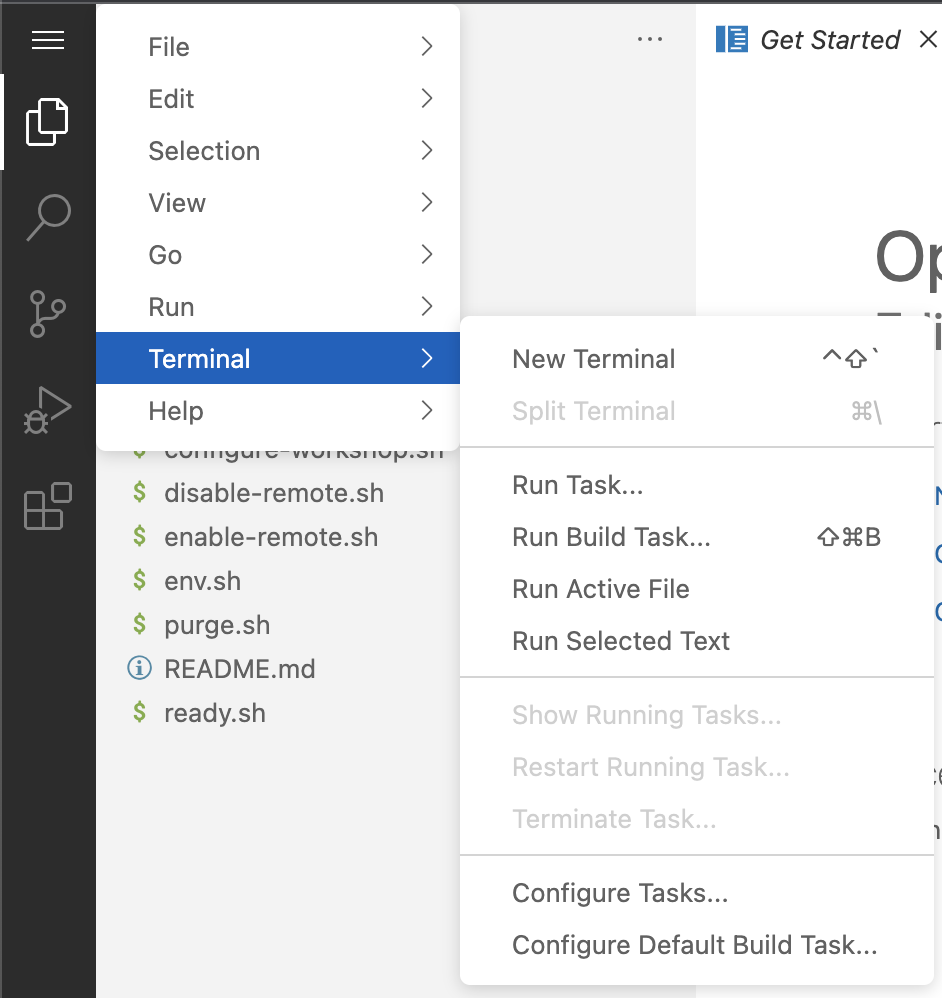

Prepairing your Enviornment
All workshop enviornments are clean rooms, they are seperated from each other but look identical. The workshops are also designed to support multiple scenarios, and a such all of the enviornments are configured to a common minimal standard.
Throught this workshop we will be using Habitat and habitat remote adimistration commands to finish configuring the enviornment. However, before we do that we want to take a few mins to prepare your remote workstation for the day.d to prepare your enviornent.
First you will need to open a terminal.
In your terminal you are going to run the following commands
-
cd Habitat-workshop -
./ready.sh -
hab studio enter -
./configure-workshop.sh